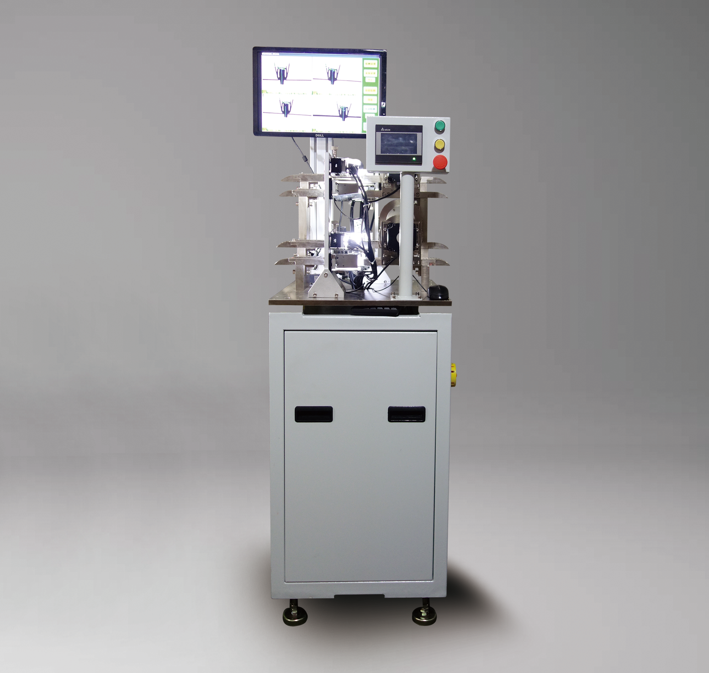
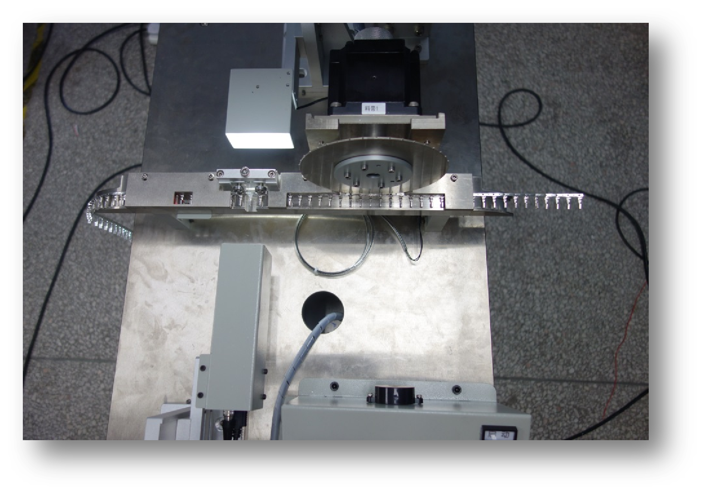
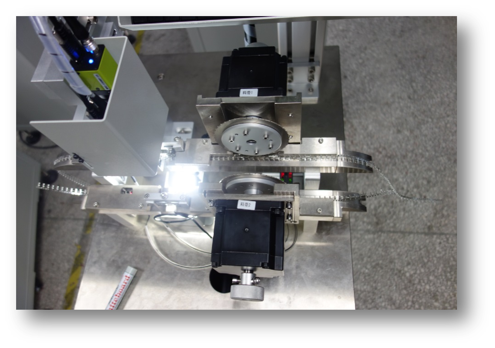
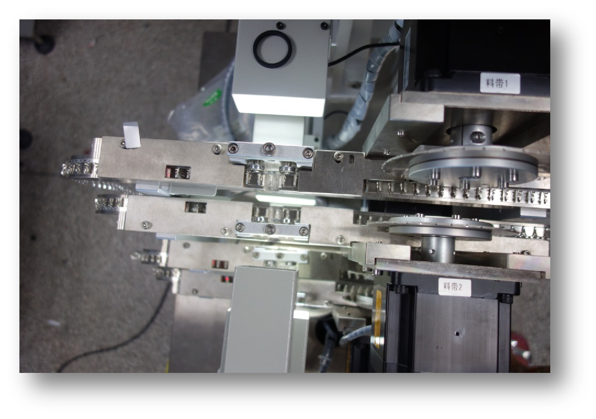

语言 / Language
WhatsApp 咨询
海外客户可通过 WhatsApp 直接与我们的业务与技术人员沟通，获取产品选型、报价与技术资料。
- 模具监视器、视觉传感器与智能相机的型号、参数及兼容性
- 产品报价、交期信息与样品或试用安排
- OEM 与定制方案、安装调试及售后技术支持
请勿通过 WhatsApp 发送密码、银行账号等敏感信息。我们仅将沟通内容用于回复您的咨询，处理方式详见 隐私政策。
海外客户可通过 WhatsApp 直接与我们的业务与技术人员沟通，获取产品选型、报价与技术资料。
请勿通过 WhatsApp 发送密码、银行账号等敏感信息。我们仅将沟通内容用于回复您的咨询，处理方式详见 隐私政策。

•全自动检测，降本增效搭载智能视觉检测算法，全程自动化运行，替代人工肉眼检测，大幅降低人力成本，同时避免人为误差，保障检测一致性与稳定性。
•全维度测量，覆盖核心参数精准检测连接器任意边缘间距，同时兼容圆形连接器、端子间距等关键尺寸测量，一站式满足多类型检测需求。
•高兼容性适配，灵活应对多样场景支持不同规格、不同类型连接器检测，无需频繁更换设备或调整核心架构，适配产线多品类生产模式。
•数据可追溯，赋能质量分析检测数据实时存储，支持历史数据查询、导出与趋势分析，为生产工艺优化、质量问题溯源提供可靠数据支撑。
•公差自定义，智能判定合格性支持用户自主设置公差阈值，系统自动比对测量数据与标准范围，快速判定工件合格状态，提升质检效率与精准度。
适检范围：用于检测各种连接器、端子、针脚、小型变压器等电子元器件的外观、尺寸、形状等



单料带检测双料带检测多料带检测
| 项目 | 单料带检测设备 | 双注塑件料带检测设备 |
|---|---|---|
| 检测产品范围 | 冲压件单料带 | 冲压件双料带 |
| 检测产品区域 | 产品正反面和侧面 | 产品正反面和侧面 |
| 检测产品内容 | 产品毛刺、异色、尺寸不良等 | 产品毛刺、异色、尺寸不良等 |
| 产品上料方式 | 产品冲压后电机带动料带逐个检测 | 产品冲压后电机带动料带逐个检测 |
| 产品检测速度 | CCD检测速度最高可达10个/秒 | CCD检测速度最高可达10个/秒 |
| 产品检测精度 | 正负0.02mm以内 | 正负0.02mm以内 |
| 检测到不良品 | 检测到不良品后切除掉，连续几个不良报警 | 检测到不良品后切除掉，连续几个不良报警 |
| 设备CCD数量 | 1～3个 | 2～6个 |
| 设备占用尺寸 | 长宽高：4850mm×550mm×1950mm | 长宽高：4850mm×730mm×1950mm |
| 设备功能 | 设备一键启动停止、一键标定 | 设备一键启动停止、一键标定 |
技术声明：以上参数为规定工况下的典型参考值，仅供选型参考，不构成性能保证；实际检出率、精度与节拍取决于工件、光照、治具及参数设定，以双方技术协议与验收标准为准。规格如有变更，恕不另行通知。详见《销售条款与技术声明》。 技术声明
MAIBIDA · 智造未来
昆山迈必达智能设备有限公司专注机器视觉光源与工业在线检测设备，集研发、生产、销售于一体，为制造业提供视觉检测、模具监视、智能筛选与自动化上料一体化解决方案。
客户服务热线：15995675085
官方邮箱：mai_bida@163.com
地 址：中国江苏省苏州昆山市玉山镇乐山路6号裕大科技园2楼213室
WhatsApp 咨询：+86 159 9567 5085